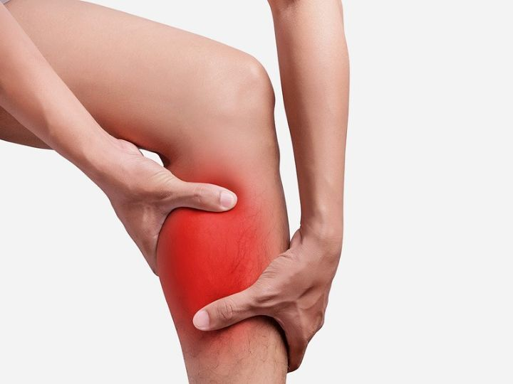

https://cafe.daum.net/subdued20club/ReHf/5775465?svc=cafeapi

누가 강제로 내 종아리 근육 뭉탱이로 잡아 뜯어서 다른쪽으로 옮겨놓은 느낌
또는 존나 쌔려 쳐서 파열 시킨 느낌
심한 통증은 몇초이긴 하지만 존나 지옥임
잠결에 오열
일어나면 절뚝거림
===
지금 양발 다 이거 걸림
https://cafe.daum.net/subdued20club/ReHf/5775465?svc=cafeapi

누가 강제로 내 종아리 근육 뭉탱이로 잡아 뜯어서 다른쪽으로 옮겨놓은 느낌
또는 존나 쌔려 쳐서 파열 시킨 느낌
심한 통증은 몇초이긴 하지만 존나 지옥임
잠결에 오열
일어나면 절뚝거림
===
지금 양발 다 이거 걸림
피씨근이머임
컴터 많이 하면 생기는 근육
어릴땐 어떻게 하는지 몰라서 맨날 당했는데, 발가락을 머리쪽으로 당기면 된다는거 알고 나서 부터, 발가락 땅기면 바로 풀리더라.
자다가 나도 모르게 기지개 쫙 펴서 근육 놀라고 종아리 저렇게 됨
예전에 자다가 자주 쥐났었는데, 운동 시작하고 나서는 한 번도 안 걸리더라
걷다가 갑자기 저거오더니 일주일간 걸을때마다 계속 아파서 병원갔더니 근육 파열 -- 하..
임신하면 존나 자주 쥐남
나도 임신한건가
출산율 기여하자!
남자이지만 애국을 할 수 있다면
근육 찢어지는 느낌이긴 함
못 일어날 것 같으면 일단 발바닥 바닥쪽으로 힘주면 됨
이거 그냥 재빨리 일어나서 발 딛으면 됨
이게정답
자다가 처음 종아리 쥐났을때 악!!! 하고 막 소리 질렀다고 부모님이 말해주심ㅋㅋㅋ
이제는 하도 익숙해져서 가끔 오면 잠결에 그냥 발쭉뻗고 발가락 몸쪽으로 땡기고 풀고 잠ㅋㅋㅋㅋ
연에 한번 두번정도씩 꼭 저러던데 이유가뭘까
운동안해서
혹은 과해서
기지개 잘못펴선 아침컨디션 개박살
마그네슘 챙겨먹어라..
남자라서 확률은 적지만 빈혈인 경우 자다가 쥐 날 수 있어. 검사해봐.
이거 몸에 피 모자랄 때 그런거임?
그러니까 여러 이유로 암이나 질병으로 몸 속의 피가 출혈을 일으킬 경우나, 철분이 부족한 경우 빈혈을 유발하거든... 무리한 운동으로 인한 근육통이 아니고 자주 저런 증상이 있다면 남자라면 필히 검사해야 함.
빈혈은 여자보다 남자가 드문 경우라서 더욱 주의 해야해.
내가 출혈이 심해서 병원 입원했는데 저란 증상이 있었음
근데 간호사는 고통스러워 하는 나 보면서 덤덤하게 있음
ㅅㅂ 이게 별거 아닌 건가 싶어서 아무 말도 못했는데
이거 간호사 깠어야 하는 건가? 이 ㅅㅂ년이 난 아파서
링거 매달고도 뒤틀려 죽겠는데 옆에서 무심한? 한심한?
눈으로 그냥 쳐다 봄 내 코를 좃나 골아서 쌤통이다 이런 식으로
쳐다본건가 아 ㅅㅂ 다시 생각하니 기분 개 좃같네
저럴땐 재빨리 침대서 내려와 서면 됨
종아리 가려워서 반대발로 긁어주다 쥐남 ㄹㅇ 개아픔
운동부족일때 자주걸리더라
어릴 때 자주 걸렸는데 중딩부터는 저런 일 없더라
발끝을 위로 땡기면 한번씩 저러던데ㅅㅂ
ㅁㅌㅇ
자다가 한 번씩 걸리면 비명도 안나오더라 ㅋㅋ
진짜 진또배기는 종아리가 아니라 허벅지 안쪽임 종아리는 혼자서 푸는 방법이라도 알지 허벅지는 시발
흔히 말하는 쥐가 이거임. 그래서 다리 저릴 때 쥐났다 하는데 그건 그냥 피 안 통해서 저리는 거고 이게 쥐 걸린 거라서 다리를 쭈욱 펴고 발등을 몸쪽으로 당기면서 종아리를 늘려주면 살짝 더 빠르게 풀림
허벅지 쥐가 종아리 쥐에 두배는 아픈듯 ㅅㅂ
저거 첨 겪었을 때 ㄹㅇ 누가 내 다리 잘라가는 줄 알음 ㅋㅋ
야간 다리 경련 이라고 하더라 ㅋㅋㅋ
마그네슘 챙겨먹어
의사가 먹으라고 해서 먹어보니깐 없어지더라
쓰벌.........몇년을 고생해봐서 공감되네
발에 생기면 방향바꾸고 어쩌구 해서라도 되지
허벅지는 뭐 어떻게 풀지도 못함
자다가 일어나서 음소거 비명지른적 개많음
이거 있는사람은
약국가서 마그네슘 사다먹어라 싹없어졌다
자다가 종아리에 쥐나면 진짜 소리도 못낼정도로 엄청아프더라 ㅋㅋㅋㅋ
일년에 한두번정도 가끔 나는데 죽기 직전까지 아프다는게 이런걸까 싶을정도로 아픔
인중아래 윗입술 꼬집고 있으면 풀렸음 경험상 종아리만 해당됨 무슨 매커니즘인지는 몰름
가족이 이것 때문에 스트레스 많이 받아서 다시 보러온 글인데 말해줘야겠다
누워서 기지개 피면 종아리에 쥐나는데 그 근육통이 일주일은 가더라 ㅅㅂ
저거 힘 조절해가면서 70~80정도로 유지하면 PC근 자극 됨 맘급해져서 힘좀더주면 바로 좆되는거